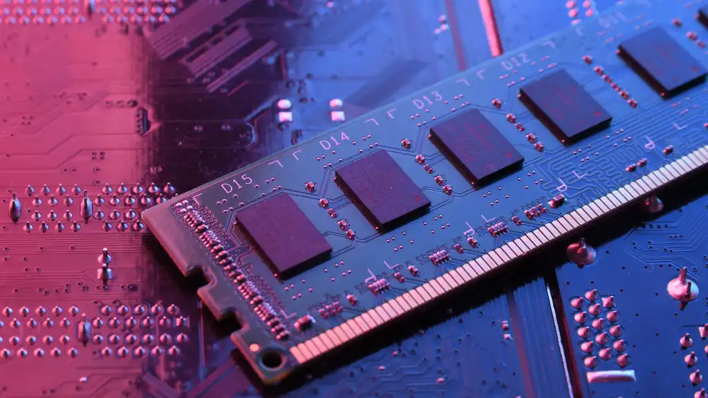

We believe that the most significant technological leaps are born from a relentless pursuit of perfection and a responsibility to the world around us. Our company was founded in the memory vacuum created by the AI giants and their partners in order to seize the insurmountable demand created in the abandoned consumer market. This is why our vision is to enable affordable consumer electronics again and innovation through competition in a hostile market.

At Starlight Electronics, our vision extends beyond the cleanrooms and the silicon. We strive to create technology that is accessible, sustainable, and capable of solving the world's most pressing challenges. By continuously pushing the boundaries of lithography and microchip design, we empower not just creators and innovators globally but also the average consumers that have been taking the toll of a market that aims to abuse them and disregard their needs.
We measure our success not just by the microchips and machinery that we manufacture and sell, but also by the positive impact that our technology has on everyday life. From life-saving medical equipment to efficient energy grids or the average person's device at home, our components are the invisible engine driving a better future for everyone.